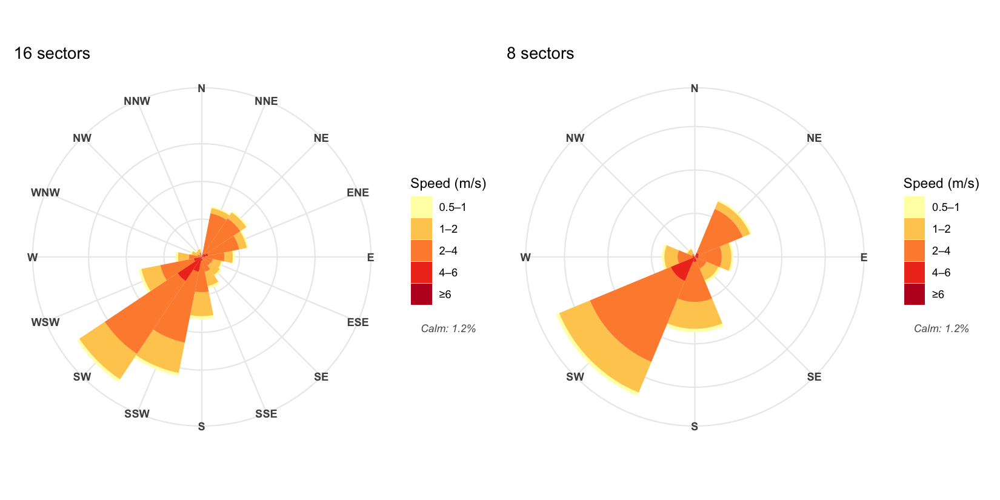
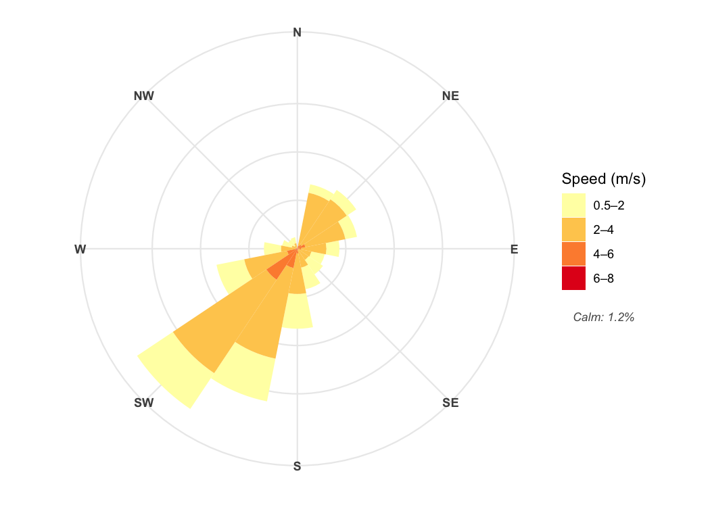
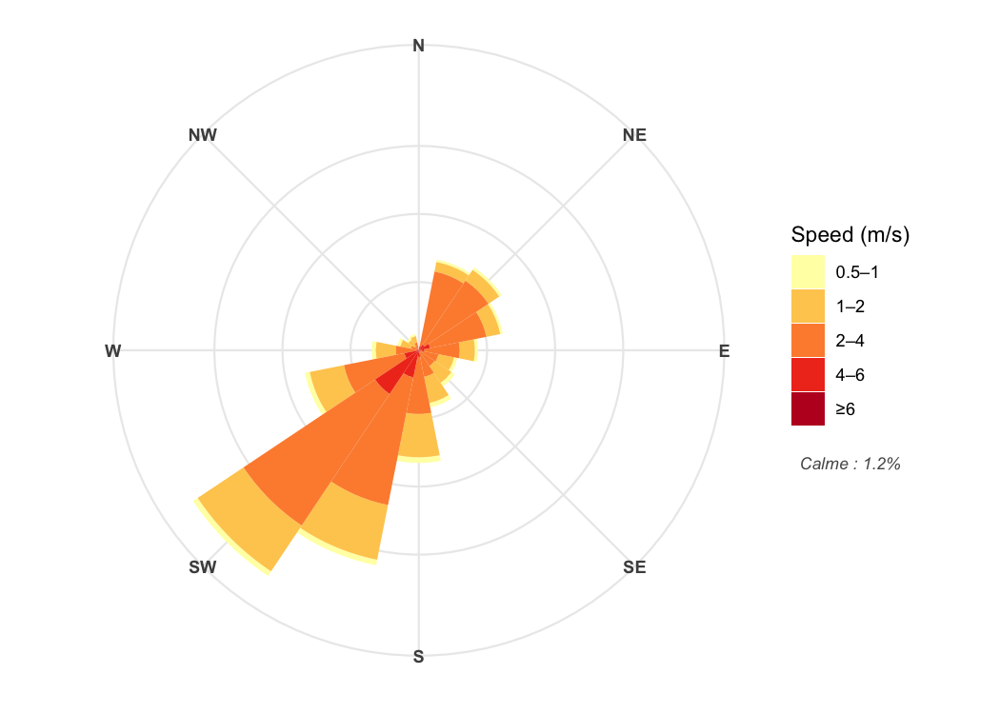
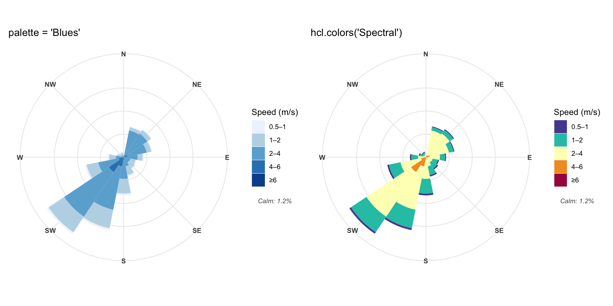
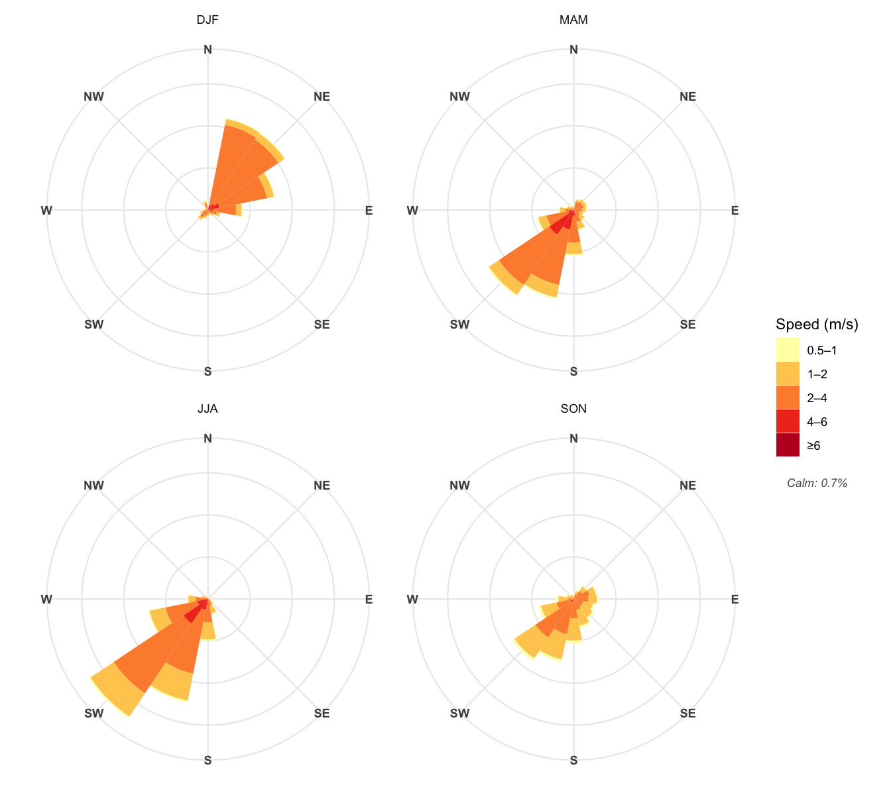

ggwindrose extends ggplot2 with a wind rose geom that bins wind direction and speed observations into a direction-by-speed frequency table using a custom Stat/Geom pair.
Features
-
geom_windrose()— stacked frequency bars, fully compatible withfacet_wrap() -
coord_windrose()— polar coordinates: North at top, clockwise -
scale_x_windrose()— compass labels (4, 8, or 16 points) -
scale_y_windrose()— radial frequency axis, starts at 0 -
scale_fill_windrose()— sequential or manual colour scale -
guide_windrose()— legend with automatic calm-% footer -
theme_windrose()— opt-in minimal theme (no axis clutter)
Installation
# Development version from GitHub
# install.packages("pak")
pak::pak("yourusername/ggwindrose")Quick start
library(ggwindrose)
library(ggplot2)
ggplot(wind, aes(x = wdir, y = wspd)) +
geom_windrose() +
coord_windrose() +
scale_x_windrose() +
scale_y_windrose() +
scale_fill_windrose(name = "Speed (m/s)") +
theme_minimal() +
theme_windrose()
#> Warning: Removed 5 rows containing missing values or values outside the scale range
#> (`geom_windrose()`).Customisation
Number of sectors
library(patchwork)
p16 <- ggplot(wind, aes(x = wdir, y = wspd)) +
geom_windrose(n_dir = 16) +
coord_windrose() +
scale_x_windrose("16pt") +
scale_y_windrose() +
scale_fill_windrose(name = "Speed (m/s)") +
ggtitle("16 sectors") +
theme_minimal() +
theme_windrose()
p8 <- ggplot(wind, aes(x = wdir, y = wspd)) +
geom_windrose(n_dir = 8) +
coord_windrose() +
scale_x_windrose("8pt") +
scale_y_windrose() +
scale_fill_windrose(name = "Speed (m/s)") +
ggtitle("8 sectors") +
theme_minimal() +
theme_windrose()
p16 + p8
#> Warning: Removed 5 rows containing missing values or values outside the scale range
#> (`geom_windrose()`).
#> Removed 5 rows containing missing values or values outside the scale range
#> (`geom_windrose()`).
Custom speed breaks
ggplot(wind, aes(x = wdir, y = wspd)) +
geom_windrose(speed_breaks = c(0.5, 2, 4, 6, 8, Inf)) +
coord_windrose() +
scale_x_windrose() +
scale_y_windrose() +
scale_fill_windrose(name = "Speed (m/s)") +
theme_minimal() +
theme_windrose()
#> Warning: Removed 4 rows containing missing values or values outside the scale range
#> (`geom_windrose()`).
Calm percentage
The calm-% footer is added automatically to the legend. Calm winds (speed ≤ 0.5 m/s by default) are excluded from the bars but counted in the frequency denominator.
ggplot(wind, aes(x = wdir, y = wspd)) +
geom_windrose() +
coord_windrose() +
scale_x_windrose() +
scale_y_windrose() +
scale_fill_windrose(
name = "Speed (m/s)",
guide = guide_windrose(
calm_text = windrose_calm_pct(wind$wspd, label = "Calme : ")
)
) +
theme_minimal() +
theme_windrose()
#> Warning: Removed 5 rows containing missing values or values outside the scale range
#> (`geom_windrose()`).
Colours
p_blues <- ggplot(wind, aes(x = wdir, y = wspd)) +
geom_windrose() +
coord_windrose() +
scale_x_windrose() +
scale_y_windrose() +
scale_fill_windrose(palette = "Blues", name = "Speed (m/s)") +
ggtitle("palette = 'Blues'") +
theme_minimal() +
theme_windrose()
p_spectral <- ggplot(wind, aes(x = wdir, y = wspd)) +
geom_windrose() +
coord_windrose() +
scale_x_windrose() +
scale_y_windrose() +
scale_fill_windrose(
colors = hcl.colors(5, "Spectral", rev = TRUE),
name = "Speed (m/s)"
) +
ggtitle("hcl.colors('Spectral')") +
theme_minimal() +
theme_windrose()
p_blues + p_spectral
#> Warning: Removed 5 rows containing missing values or values outside the scale range
#> (`geom_windrose()`).
#> Removed 5 rows containing missing values or values outside the scale range
#> (`geom_windrose()`).
Seasonal facets
Each panel independently computes its own frequencies and calm percentage.
library(dplyr)
#>
#> Attaching package: 'dplyr'
#> The following objects are masked from 'package:stats':
#>
#> filter, lag
#> The following objects are masked from 'package:base':
#>
#> intersect, setdiff, setequal, union
wind |>
mutate(season = case_when(
month %in% c(12, 1, 2) ~ "DJF",
month %in% c(3, 4, 5) ~ "MAM",
month %in% c(6, 7, 8) ~ "JJA",
month %in% c(9, 10, 11) ~ "SON"
)) |>
mutate(season = factor(season, levels = c("DJF", "MAM", "JJA", "SON"))) |>
ggplot(aes(x = wdir, y = wspd)) +
geom_windrose() +
coord_windrose() +
scale_x_windrose() +
scale_y_windrose() +
scale_fill_windrose(name = "Speed (m/s)") +
facet_wrap(~season) +
theme_minimal() +
theme_windrose()
#> Warning: Removed 16 rows containing missing values or values outside the scale range
#> (`geom_windrose()`).